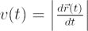
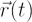

Speed, a scalar quantity, is the magnitude of the vector velocity:

where

is the three-dimensional vector displacement. The speed can be also be specified as an average speed or an instantaneous speed.The speed is expressed in units of [distance/time], often m/s or km/h.